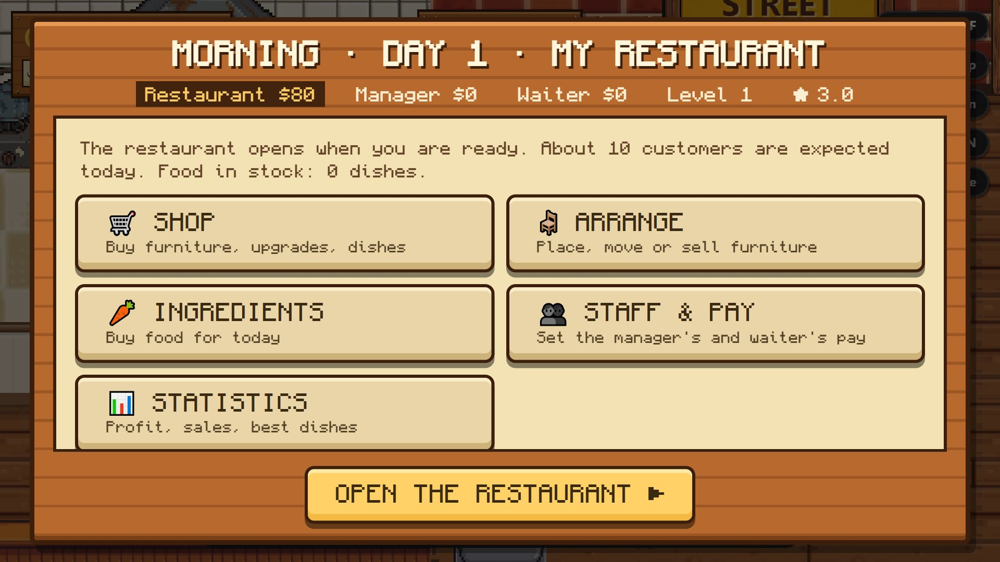
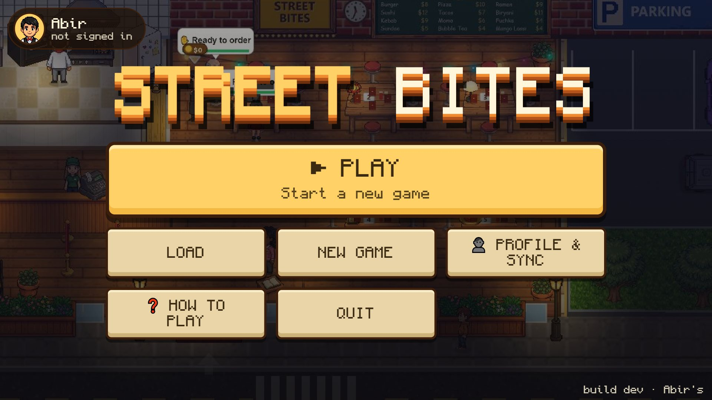

Free. On a phone, turn it sideways to play.
Run your own street-food restaurant. Walk around as the waiter to take orders and serve the food, then switch to manager to buy ingredients, arrange the tables and set everyone's pay.

Screenshots


About this game
You play two jobs. The computer runs the rest of the staff for now.
Two jobs
In the restaurant you're the waiter: take orders, ring the kitchen, carry the food, clear dirty tables. Before opening and after closing you're the manager.
A full day
Buy ingredients in the morning, open the doors, serve customers until 10 PM, then read the night report.
Street food menu
Burgers, pizza, ramen, sushi, tacos, biryani, kebab, momo, fuchka, sundaes, bubble tea and mango lassi.
Happy customers
Customers show how they feel and leave 1 to 5 stars. Good stars bring more customers.
Build your place
Buy furniture, upgrades and new dishes. Place, move or sell tables, chairs and decorations.
Play anywhere
Use Profile & Sync with your email to carry on from another phone or computer.
How to play
A day at your restaurant
- Morning: open Ingredients, tap Fill for … customers (it buys enough for today's expected customers), then Buy.
- Tap Open the restaurant.
- Take each order, ring the kitchen, carry the food to the table and clear dirty tables. Tips go into the waiter's wallet.
- At 10 PM the restaurant closes. Read the night report, shop and rest. The game saves by itself at the end of each day.
Controls
The big round button always shows what you can do where you stand.
- Phone or tablet: drag anywhere on the left half to move, and tap the big round button on the right to act.
- Computer: W A S D or the arrow keys to move, Space or E to act.
- Windows app: F11 switches full screen on and off.
- Watch the faces: 😊 happy, 😐 waiting too long, 😠 about to leave.
Installing
Android
- Download the APK and open it.
- Allow installing from this source if asked, then tap Install.
- To update, install the new file over the old one. Don't uninstall first, or your saves are lost.
In the browser
- Open the game. It's always the newest version.
- To keep it like an app: in Chrome or Edge click Install in the address bar, or ⋮ → Install.
Windows
- Download the installer and open it.
- If Windows says “Windows protected your PC”, click More info → Run anyway.
- Street Bites appears on your desktop and Start menu.
Ready to open your restaurant?
Free on Android, Windows and the web.